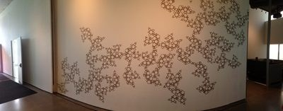
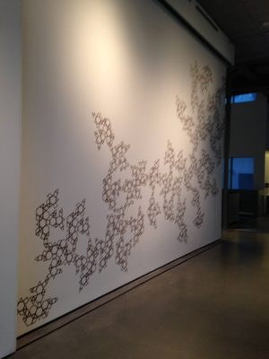
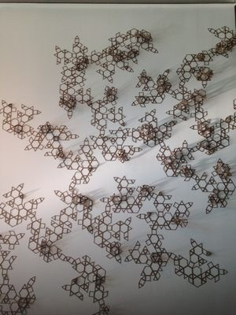
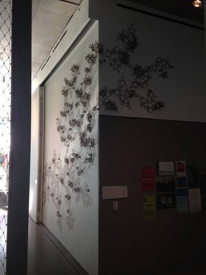

Installation
2014
Drawing
Site-specific installation
Sculpture
Growth is a site-specific installation made for a wall at the Granoff Center in Providence. A dense, branching network of small interlocking forms spreads across the white wall in black line, thickening and thinning as it travels, the way a colony of cells, a coral or a lichen spreads over a surface.
The piece is built from one simple repeating unit, and the overall form comes from how that unit accumulates. Seen from across the room it reads as a single organic shape growing along the wall. Up close, it is a field of small, regular, nearly identical parts.



